The Human Brain as a Blueprint for AI's Frontier
— Symbolic Perception, Vision-Grounded Reasoning,
and Learning Through Experience
Shan Zhang
shan.zhang@adelaide.edu.au
Australian Institute for Machine Learning
Agenda
Research Highlights
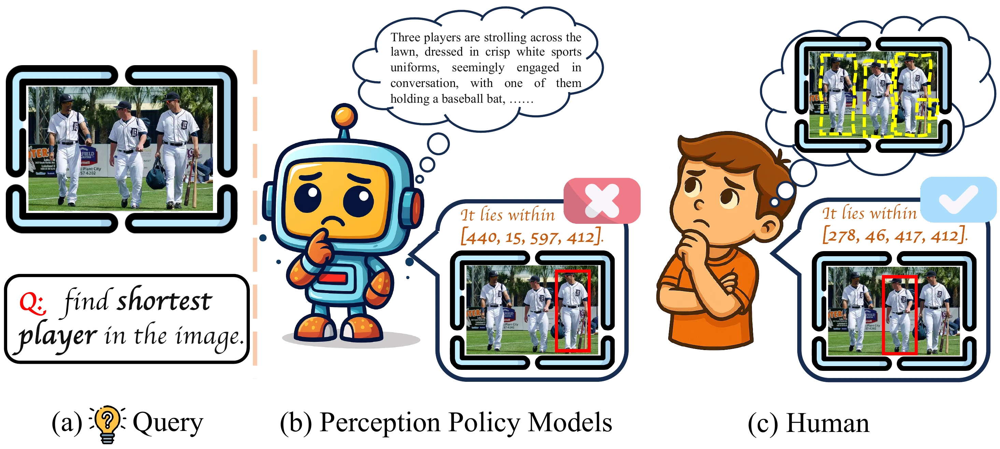
Artemis
Structured Visual Reasoning for Perception Policy Learning. Moving spotlight in visual space.
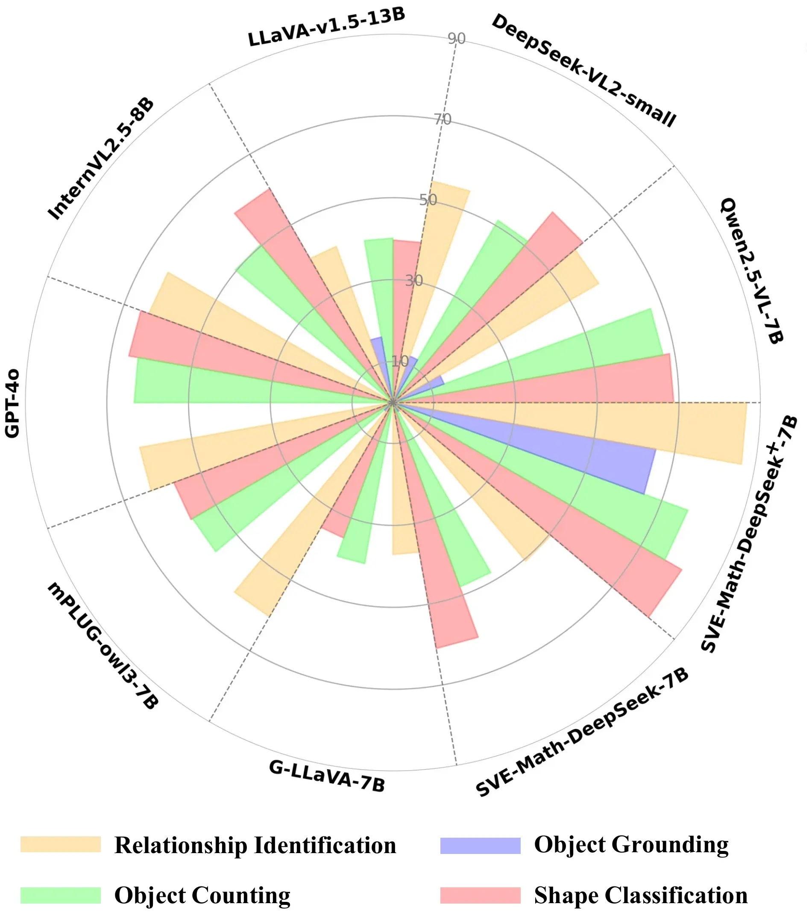
MATHEMETRIC
Math Blindness & Diagram Perception Benchmark. Structure-aware geometric dataset.
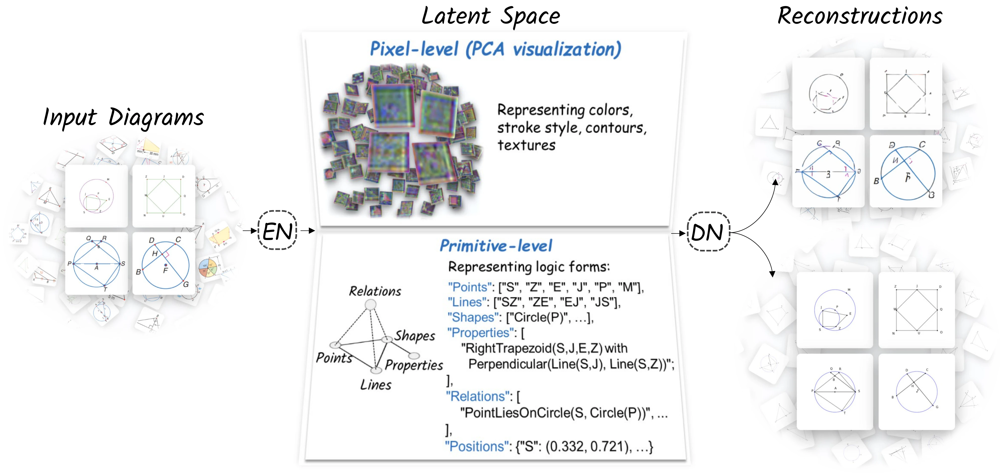
SymVAE
Symbolic Vision Auto-Encoder. Interpreting diagrams through topological structure.
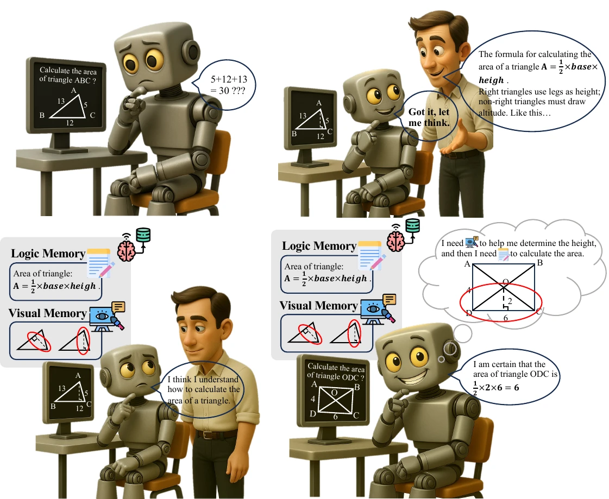
ViLoMem
Multimodal Semantic Memory. Agents that learn from mistakes via grow-and-refine mechanism.
Artemis
The Motivation
Current perception-policy models rely on ungrounded linguistic reasoning, leading to hallucinations and poor localization.
True visual perception requires reasoning in a spatial and object-centric space, not just text.
Artemis Methodology
Structured Visual Reasoning for Policy Learning
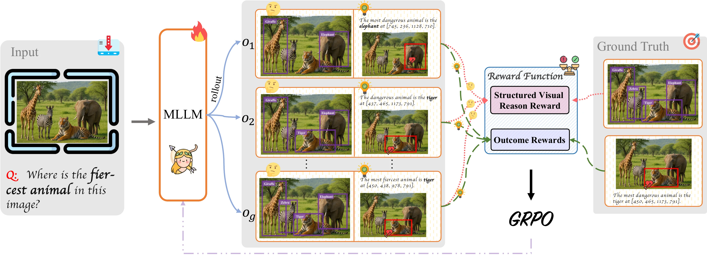
Structured Reasoning
Intermediate steps as (label, bounding-box) pairs.
Unified Framework
RL-based perception-policy learning with visual rewards.
Cross-Task
Generalizes from grounding to counting & diagrams.
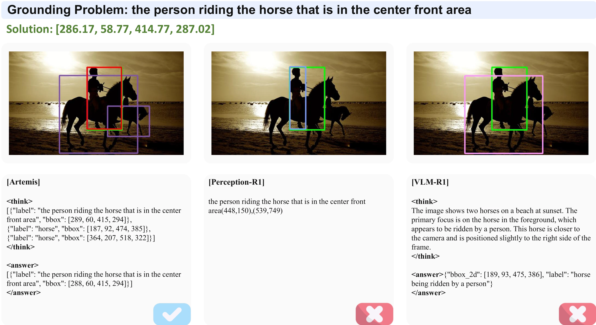
Experimental Results
Superior Grounding
Consistently outperforms SOTA on RefCOCO/+/g.
Zero-Shot Transfer
Strong performance on counting and math diagrams.
Precise Localization
Eliminates ambiguity with verifiable visual states.
MATHEMETRIC
Math Blindness
Current MLLMs suffer from "Blind Faith in Text". They rely on textual shortcuts and fail to truly perceive geometric diagrams.
We hypothesize that low-level diagram perception is the bottleneck for high-level mathematical reasoning.
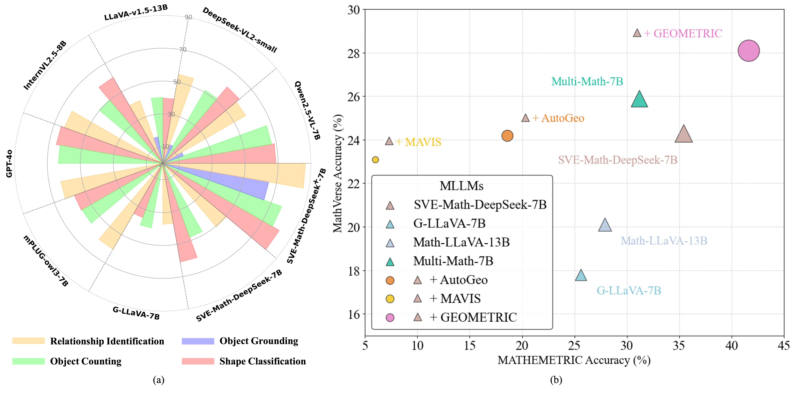
The Benchmark & Dataset
Isolating Perception from Reasoning
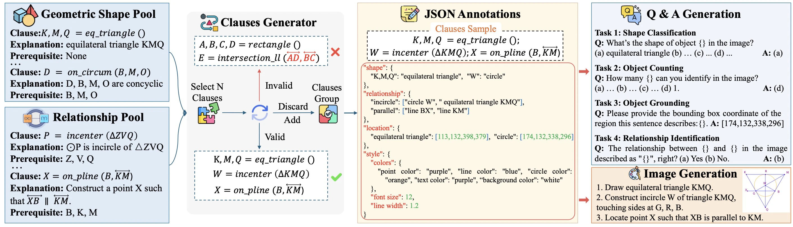
Shape Classification
Object Counting
Relationship ID
Object Grounding
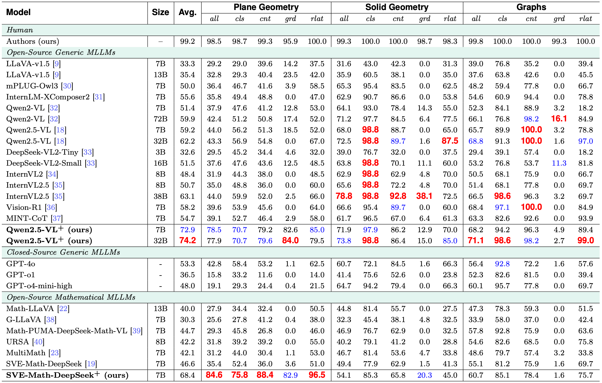
Key Findings
-
01
MLLMs perform poorly on basic perceptual tasks, with near-zero accuracy on fine-grained grounding.
-
02
Training on structured graphs (GeoPeP) yields +79% gain in grounding.
-
03
Perceptual gains transfer to reasoning, improving MathVerse and GeoQA scores.
SymVAE
Symbolic vs. Pixel
Diagrams are sparse and symbolic. Pixel-based learners waste capacity on texture and color.
We propose a Symbolic Vision Learner that parses diagrams into primitives and logic rules.
SymHPR Framework
Hierarchical Process Reward Modeling
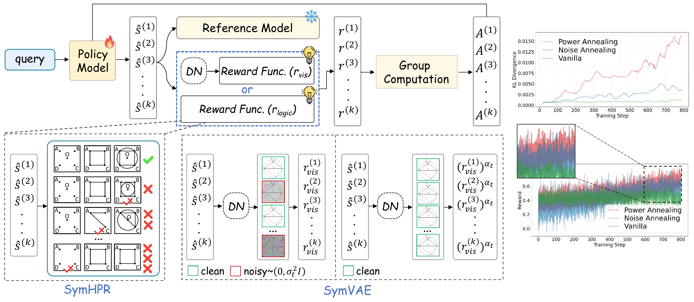
Uses a rendering engine as decoder and enforces step-level constraints:
Point → Line → Shape → Relations
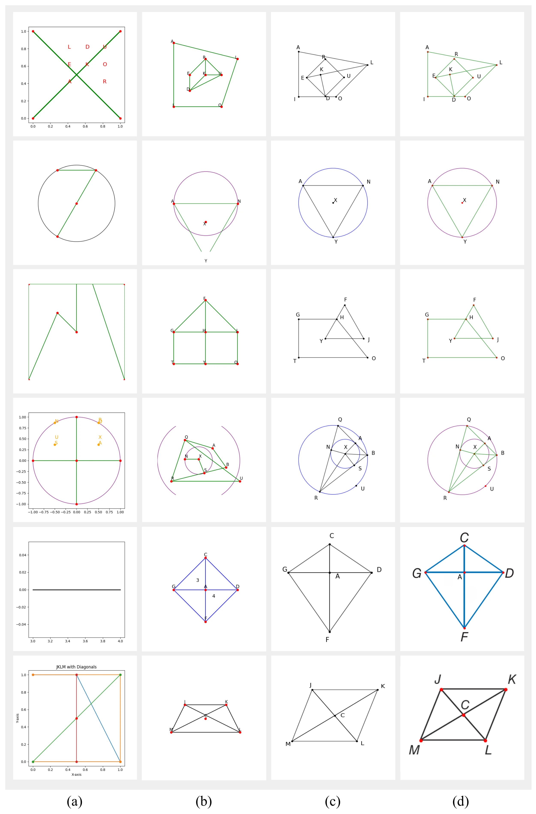
Performance
98.2%
Reduction in MSE for geometric reconstruction.
+13%
Improvement on MathGlance benchmark.
Surpasses GPT-4o in diagram reconstruction fidelity and demonstrates strong cross-domain generalization to circuits and chemical structures.
ViLoMem
Agentic Memory
Standard agents repeat mistakes because they lack integrated semantic memory.
ViLoMem mimics human cognition with Dual-Stream Memory (Visual + Logical) to grow and refine knowledge over time.
Grow-and-Refine Framework
Closed-Loop Memory Cycle
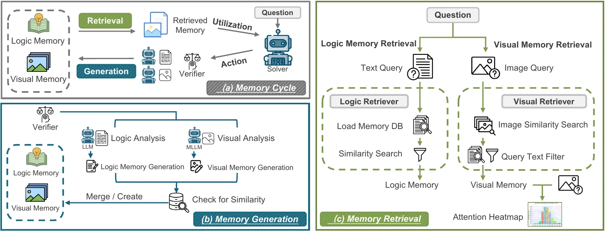
Memory Generation
Error attribution for visual & logical flaws.
Dual Retrieval
Image embedding + Question filtering.
Refinement
Merges similar schemas to prevent bloat.
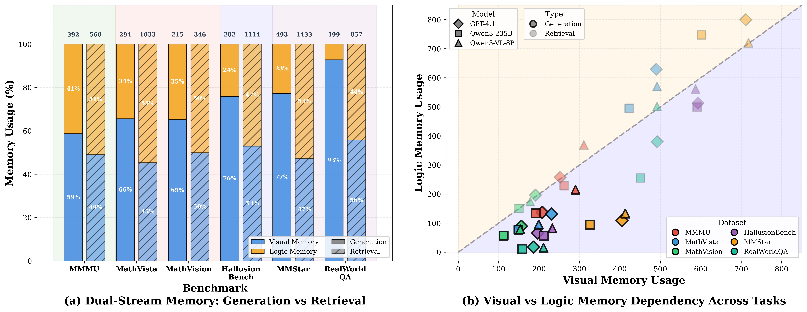
Impact
Validates that visual errors dominate (up to 93%) in multimodal reasoning.
Thank you for attention!
Shan Zhang
shan.zhang@adelaide.edu.au
Australian Institute for Machine Learning
Scan to visit